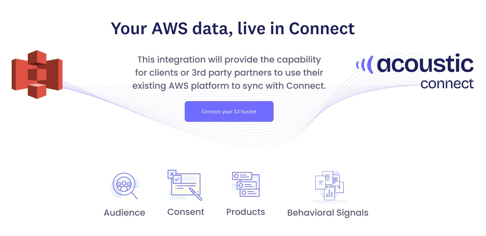
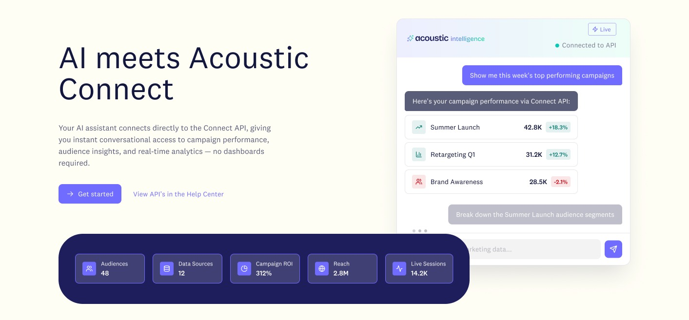
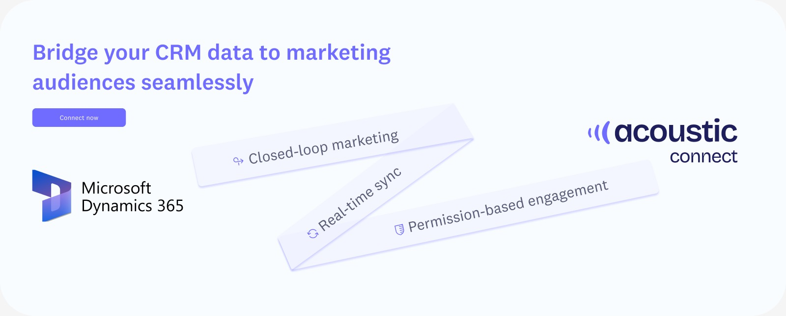

Launch visuals · Acoustic Connect
Visuals to complete stories
Three integration launches that finally look like family, and a little pulsing diamond that gives the AI assistant a presence.



The situation
New integrations ship all the time, and each launch page was a one-off with its own look. Next to each other they didn't read as the same product. The in-product assistant had a gap too: its replies looked like any other system message.
The task
Create a hero that works for very different launches, and give the assistant a way to say that an AI is the one talking.
What I did
I made one pattern: a headline stating the value, a plain line on what it does, a call to action that fits the audience, and a visual that changes per launch. For the assistant, I designed a small diamond that pulses while it's working.
What happened
Three launches now read as one product, and the next one is a content job instead of a design job. The assistant finally feels like someone is on the other end.
One pattern, three shapes
Same bones, different story
AWS S3
Your AWS data, live in Connect
The most technical audience, so the button asks for the specific action: connect your bucket.
AI assistant
A real exchange instead of a screenshot
A question, an answer with real numbers, and a follow-up queued up. The value shows before anyone signs up.
Dynamics 365
A CRM bridge, shown with motion and tags
The least visual integration borrows tilted feature tags and names both sides of the bridge up front.
The mark, live
The same diamond that sits beside every assistant reply. It pulses just enough to say "I'm here," without a spinner taking over the chat.
3
Launch heroes: AWS S3, an AI assistant, Microsoft Dynamics 365
1
Reusable hero pattern behind all three
1
Visual mark designed for the assistant, its first